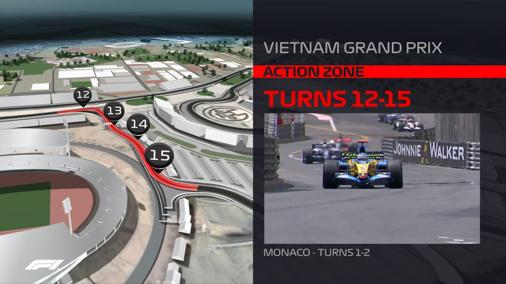

F1 breaks ground in Hanoi ahead of 2020 Vietnam Grand Prix
14/04/20Formula 1 witnessed a ground-breaking event – literally – on March 21 as construction work officially commenced on the Hanoi Circuit, the track that will host the 2020 Vietnam Grand Prix, the country’s first ever F1 race.
Set to become the fourth proper street race on the F1 calendar next year, alongside Monaco, Singapore and Azerbaijan, the Hanoi track will run to 5.57km and feature 22 corners, some of them borrowing heavily from iconic tracks like Suzuka and the Nurburgring.
Everything you need to know about the new Vietnam street circuit
From 2020, an exciting new venue will adorn F1’s calendar as Vietnam plays host to a dazzling new street circuit in the beating heart of its iconic and culturally rich capital city Hanoi…
Vietnam will become F1’s fourth street race, joining Monaco, Singapore and Azerbaijan with its unique 22-turn, 5.565km track. It will also be the fourth race in Asia, joining China, Japan and Singapore.
F1’s Motorsports team have worked with renowned circuit design company Tilke to create a semi-permanent street track, using both existing and purpose-built roads.
Let’s take a look at what we can expect come April 2020...
Inspiration from all over the world
F1 is blessed with a plethora of stunning turns and corner sequences scattered across the world’s great racing circuits, so in creating a new track, it makes sense to take inspiration from them.
That’s what the architects of the Circuit of The Americas, the current home of the United States Grand Prix, did. They drew creativeness from the quick Maggotts-Becketts-Chapel sequence at Silverstone and Istanbul’s multi-apex Turn 8 among others.
The same strategy was employed for Vietnam’s new track, located on the western side of the city in the vicinity of the My Dinh National Stadium. And that means it’s not your typical street circuit – far from it…
The aim was to create a unique hybrid layout, fusing a street circuit’s characteristics with a permanent countryside track layout within the confines of the city’s topography.
There was a real desire to steer away from humdrum 90-degree road-junction type corners and foster a layout that facilitates wheel-to-wheel racing while retaining a closed-in street feel that makes city race tracks so demanding for drivers.
Turns 1 and 2 are based on the opening corners at Germany’s Nurburgring – known as a red zone for overtaking. In 2006, you may remember Juan Pablo Montoya sweeping by Giancarlo Fisichella by using the long straight for slipstream and completing his pass in the braking zone for Turn 1.